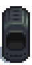
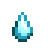
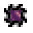

Stardew Valley
Conjuntos da Sala da Caldeira
Carrinhos reparados
Conjunto de Ferreiro
3 Itens
Recompensa: (1)
| Itens | Nome | Quantidade | Local |
|---|---|---|---|

|
Barra de cobre | 1 | Derretendo minérios de cobre. |

|
Barra de ferro | 1 | Derretendo minérios de ferro. |

|
Barra de ouro | 1 | Derretendo minérios de ouro. |
Conjunto de Geólogo
4 Itens
Recompensa:  (5)
(5)
| Itens | Nome | Quantidade | Local |
|---|---|---|---|

|
Quartzo | 1 | Colete em todos os andares das minas. |

|
Cristal da terra | 1 | Colete nos andares 1-39 das Minas, Geodos, deixado por Cavadores nas Minas (andares 1-29). |
|  | Lágrima congelada | 1 | Colete nos andares 40-79 das Minas, Geodos congelados, deixado por Espíritos da Poeira (andares 40-80). |

|
Quartzo de fogo | 1 | Colete nos andares 80-120 das Minas, Geodos de Magma, Omnigeodo. |
Conjunto de Aventureiro
2 Itens
Recompensa:  (1)
(1)
| Itens | Nome | Quantidade | Local |
|---|---|---|---|

|
Gosma | 99 | Deixada por Gosmas. |

|
Asa de morcego | 10 | Deixadas por Morcegos nas Minas. |

|
Essência solar | 1 | Deixada por Fantasmas, Faces ou Cabeças de metal nas Minas, deixada por Múmias na Caverna da Caveira. |
|  | Essência nula | 1 | Deixada por Brutos das sombras nas Minas ou Serpentes na Caverna da Caveira. |